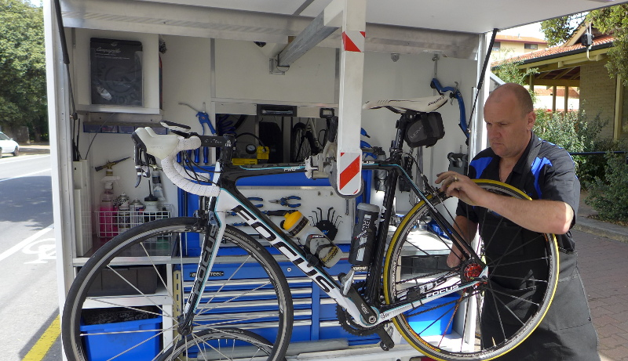
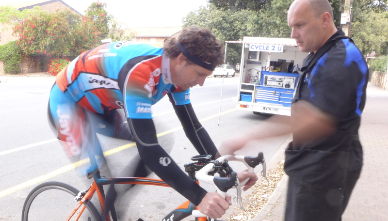

Welcome to Cycle2U
Cycle2U is a new, innovative, premium mobile bicycle servicing, repairs and maintenance workshop, recognising the importance of customers needs. Avoid the hassle involved in transporting your bike to and from bike shops in business hours and waiting days to retrieve at a later date. WE COME TO YOU! We specialise in road bicycles and will visit most suburbs around Adelaide, to carry out servicing, custom build ups and minor repairs. At home or office, WHEN IT SUITS YOU!
Complete Servicing Package
Specialising in road bicycles, I will visit most suburbs around Adelaide to carry out servicing, custom build ups and minor repairs. At home or office, when it suits you! A self sufficient set up allows me to remain on site all day if needed.
We offer a group booking discount when three or more bikes are serviced together.
Stocking a basic range of genuine top quality parts:
- Tyres
- Tubes
- Inner and Outer cables
- Brake Pads
- Handle Bar Tapes
- and much more!
Professional Bike Fit Service
There is no better upgrade to your bike than improving the fit of the engine !
Each rider is different, and Paul is able to use his extensive experience to fit riders of all levels to their bike to find the best position for the best possible effect on the road.
For the optimum in comfort, safety and personal performance - a good bike fit is an essential peice of the puzzle.
Price: P.O.A - very reasonable for a comprehensive bike fit.
